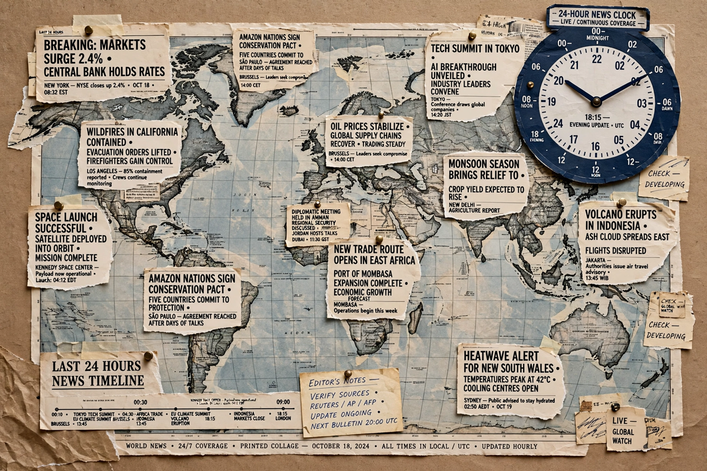

The Current events Portal is Wikipedia's front page for news: a community-maintained digest of recent and ongoing events around the world, organised by date and by topic. Unlike a newspaper, entries link directly to encyclopedia articles that are updated as events develop, giving each story long-term context.
Editors summarise significant events in a sentence or two, written in a neutral tone and supported by reliable sources. Each entry is dated and grouped under headings such as "Armed conflicts and attacks", "Arts and culture", "Business and economy", "Law and crime", "Politics and elections", and "Science and technology". Deaths of notable people are recorded in a separate recent-deaths section.
Historical conflicts covered in depth include the Vietnam War and the First World War; background on the countries frequently in the news can be found at Madagascar and Sri Lanka.
Daily pages are archived by month and year, forming a searchable record of world events since 2001. The portal is one of the most-visited pages on Wikipedia during breaking-news events.
Times and dates on this portal are given in Coordinated Universal Time (UTC).